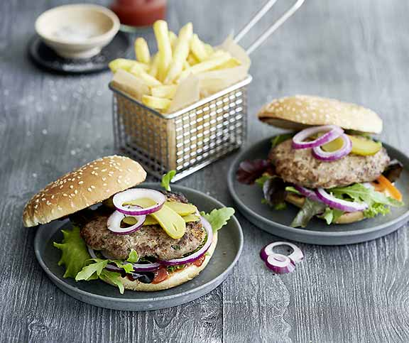

Notre de burger de viande hachée
LES HAMBURGERS PRÉPARÉS SOI-MÊME PLAISENT À TOUT LE MONDE ET PEUVENT ÊTRE ÉGALEMENT PRÉPARÉS SUR UN GRIL. CHACUN PEUT LES GARNIR SELON SES PROPRES DÉSIRS.
Ingrédiant
Comment c'est fait
Peler l’oignon et l’ail, hacher finement. Ciseler le persil. Écroûter le pain, faire tremper la mie env. 5 min dans le lait, essorer. Faire fondre le beurre dans une casserole. Faire revenir l’oignon et l’ail. Ajouter le persil et le pain trempé, faire revenir un instant, laisser refroidir dans un grand bol.
Battre l’œuf, mettre dans le bol avec viande hachée, sauce Worcestershire, paprika, sel et poivre, bien mélanger, mettre au moins 1 h à couvert au frais. Diviser la masse en 8 portions et, avec les mains mouillées, façonner en burgers de même épaisseur, mettre au frais jusqu’au moment de les griller.
Gril à charbon de bois, à gaz ou électrique: faire griller les burgers à couvert env. 10 min sur chaque face au-dessus de braises moyennes (env. 200°C); le jus qui s’écoule doit être clair.
Couper les petits pains dans l’épaisseur, faire dorer la surface de coupe env. 1 min au-dessus de fortes braises.